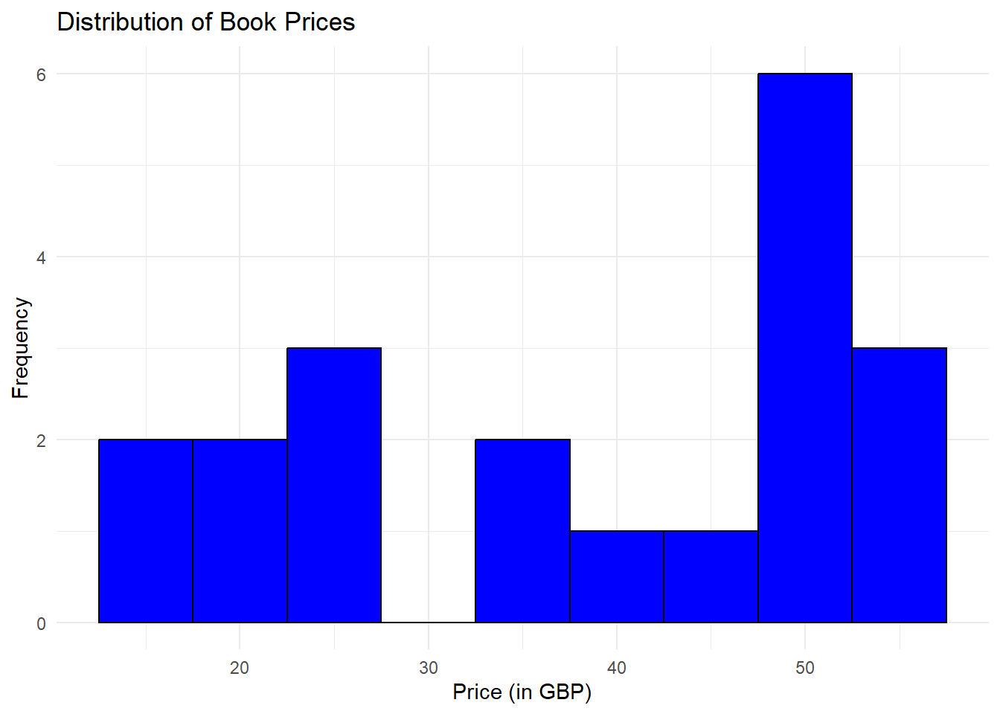
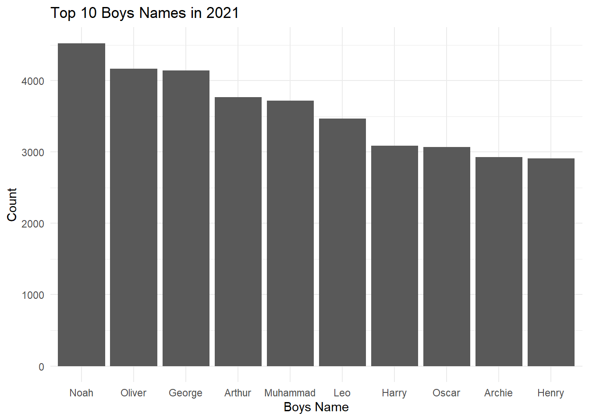
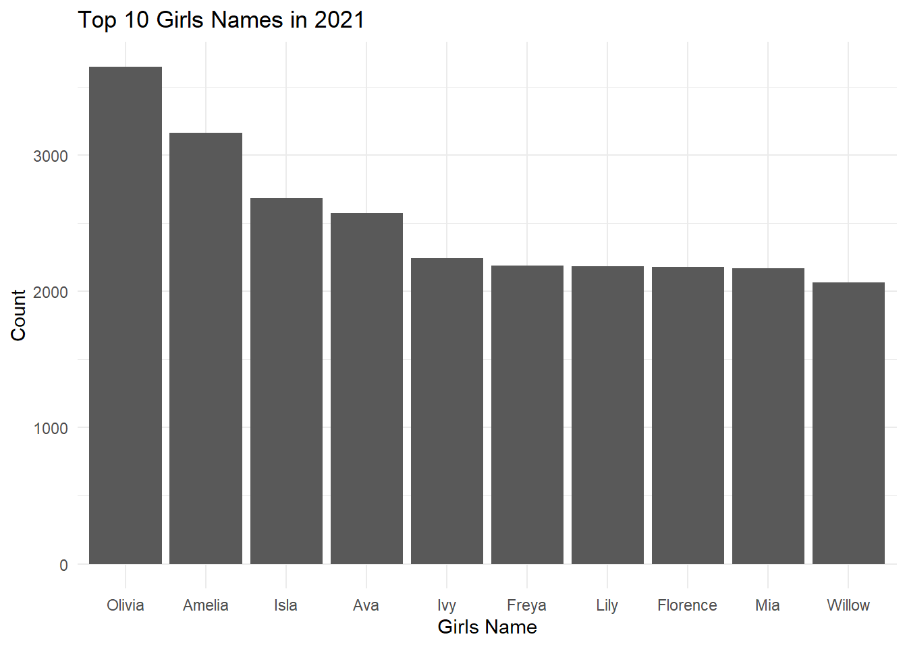

# Loading Required Libraries
# rvest for web scraping, ggplot2 for visualization, and dplyr for data manipulation
library(rvest)
library(ggplot2)
library(dplyr)Data Web Scraping
Utilizing rvest for data extraction and visualization
During academic studies, data is typically provided in user friendly formats. However, in real-world scenarios, it is often necessary to retrieve data embedded within websites. Obtaining such data is a fundamental aspect of Data Science. This project demonstrates how to use web scraping techniques to acquire such data using the rvest package in R. We present two simple examples: scraping book data from a website and extracting the most popular baby names from a government statistics page.
1st Example: Scraping Book Data
The goal of this example is to demonstrate how to scrape book information from the “Books to Scrape” website. It features various book categories (each with randomly assigned prices and ratings). This site is specifically designed for web scraping practice and it is a safe playground for learning and practicing web scraping techniques!
For this project, we will use three R libraries essential for web scraping, data manipulation, and visualization. I want to mention rvest specifically because it is the most important for this project. This library is specifically designed for web scraping, it simplifies the process of downloading web pages and extracting data from them.
We start by defining the URL and using the read_html to parse the HTML content. This allows us to access and manipulate the data embedded in the webpage.
# Define the URL for Books to Scrape
url <- "http://books.toscrape.com/"
# Send GET request and parse HTML
page <- read_html(url)The next step is to use CSS selectors and extract the book titles, prices, and ratings from the HTML content. This basically shows the ability to navigate and manipulate HTML structures to obtain the desired data.
# Extract book titles
titles <- page %>% html_nodes(".product_pod h3 a") %>% html_attr("title")
# Extract book prices
prices <- page %>% html_nodes(".product_price .price_color") %>% html_text()
# Extract book ratings
ratings <- page %>% html_nodes(".star-rating") %>% html_attr("class") %>% gsub("star-rating ", "", .)We then combine the extracted data into a data frame and clean the prices by removing the currency symbol and converting them to numeric values, to ensure that the data is ready for analysis.
# Combine data into a data frame
books <- data.frame(Title = titles, Price = prices, Rating = ratings, stringsAsFactors = FALSE)
# Convert prices to numeric values (removing '£')
books$Price <- gsub("£", "", books$Price) %>% as.numeric()
# Print cleaned data
print(head(books)) Title Price Rating
1 A Light in the Attic 51.77 Three
2 Tipping the Velvet 53.74 One
3 Soumission 50.10 One
4 Sharp Objects 47.82 Four
5 Sapiens: A Brief History of Humankind 54.23 Five
6 The Requiem Red 22.65 OneFinally, we create a histogram to visualize the distribution of the book prices.
# Plot the distribution of book prices
ggplot(books, aes(x = Price)) +
geom_histogram(binwidth = 5, fill = "blue", color = "black") +
ggtitle("Distribution of Book Prices") +
xlab("Price (in GBP)") +
ylab("Frequency") +
theme_minimal()
2nd Example: Scraping Baby Names Data
This is another example, for which we extract baby names data from the ONS website. This site provides data on various societal metrics, including popular baby names. The data is presented in tables.
Again, we begin by fetching the content of the webpage. We focus on the table containing the baby names data.
html <- read_html("https://www.ons.gov.uk/peoplepopulationandcommunity/birthsdeathsandmarriages/livebirths/bulletins/babynamesenglandandwales/2021")
names<-html %>%
html_element("table") %>%
html_table()
names# A tibble: 10 × 7
Rank `Boys name` Count `Change in rank since 2020` `Girls name` Count
<int> <chr> <chr> <int> <chr> <chr>
1 1 Noah 4,525 3 Olivia 3,649
2 2 Oliver 4,167 -1 Amelia 3,164
3 3 George 4,141 -1 Isla 2,683
4 4 Arthur 3,766 -1 Ava 2,576
5 5 Muhammad 3,722 0 Ivy 2,245
6 6 Leo 3,465 0 Freya 2,187
7 7 Harry 3,089 1 Lily 2,182
8 8 Oscar 3,071 -1 Florence 2,180
9 9 Archie 2,928 0 Mia 2,168
10 10 Henry 2,912 1 Willow 2,067
# ℹ 1 more variable: `Change in rank since 2020` <int>We clean the data by removing non numeric characters from the count columns and separate the data into two data frames, one for boys and one for girls names.
# Assign new column names to avoid duplicates
colnames(names) <- c("Rank", "BoysName", "BoysCount", "BoysChange", "GirlsName", "GirlsCount", "GirlsChange")
# Clean the Count columns to remove non-numeric characters
names <- names %>%
mutate(BoysCount = as.numeric(gsub(",", "", BoysCount)),
GirlsCount = as.numeric(gsub(",", "", GirlsCount)))
# Separate boys' and girls' names into two data frames
boys_names <- names %>%
select(Rank, BoysName, BoysCount, BoysChange) %>%
rename(Name = BoysName, Count = BoysCount, Change = BoysChange)
girls_names <- names %>%
select(Rank, GirlsName, GirlsCount, GirlsChange) %>%
rename(Name = GirlsName, Count = GirlsCount, Change = GirlsChange)Lastly, we create bar plots to visualize the top 10 boys’ and girls’ names.
# Top 10 Boys Names
ggplot(boys_names, aes(x = reorder(Name, -Count), y = Count)) +
geom_bar(stat = "identity") +
theme_minimal() +
labs(title = "Top 10 Boys Names in 2021",
x = "Boys Name",
y = "Count")
# Top 10 Girls Names
ggplot(girls_names, aes(x = reorder(Name, -Count), y = Count)) +
geom_bar(stat = "identity") +
theme_minimal() +
labs(title = "Top 10 Girls Names in 2021",
x = "Girls Name",
y = "Count")
We demonstrated essential data science skills through web scraping. Using the rvest package in R, we successfully extracted and cleaned data from websites, and visualized the results to gain some insights.